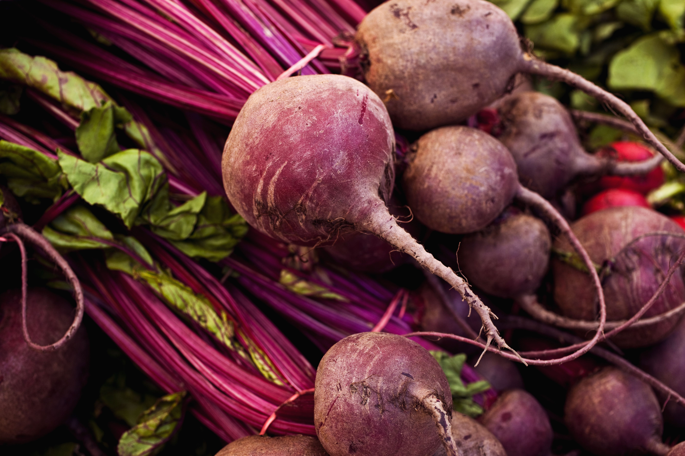
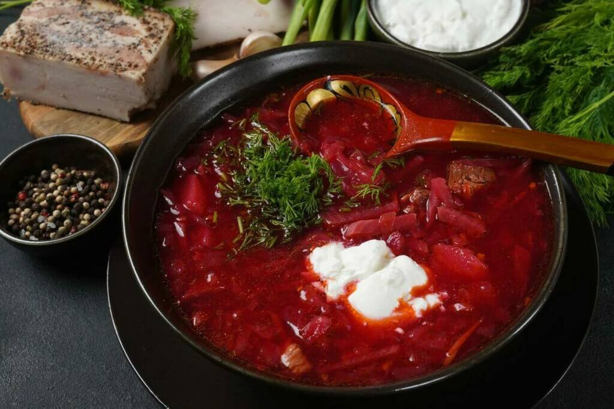
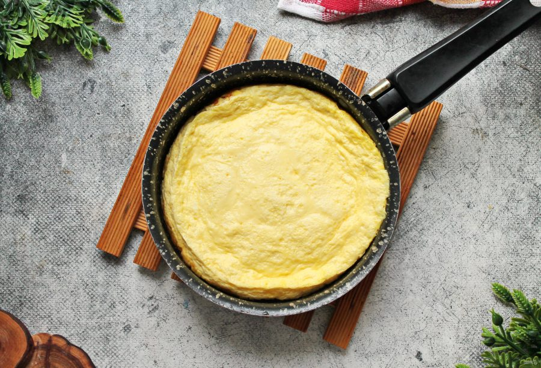

Главная > Ингредиенты > Свекла

Свекла
Описание продукта
Свекла — это корнеплод с насыщенным бордовым цветом и сладковатым вкусом, который широко используется в кулинарии по всему миру. Богата витаминами группы B, C, калием, магнием и железом. Свекла содержит уникальное вещество бетаин, которое способствует улучшению работы печени и сердечно-сосудистой системы.
В кулинарии свеклу используют для приготовления борщей, винегретов, салатов, гарниров и даже десертов. Молодую свеклу можно употреблять вместе с ботвой, которая также богата питательными веществами. Свеклу варят, запекают, тушат или употребляют в сыром виде, что сохраняет максимум полезных свойств.
Свекла известна человечеству уже более 4000 лет. Изначально её выращивали в Древнем Риме и Греции, где она ценилась не только как пищевой продукт, но и как лекарственное растение. Интересно, что изначально в пищу употребляли только ботву, а корнеплоды использовали в лечебных целях.
Полезные свойства свеклы:
- Улучшает пищеварение и работу кишечника благодаря высокому содержанию клетчатки
- Снижает артериальное давление за счет содержания нитратов
- Укрепляет иммунитет благодаря витамину C и антиоксидантам
- Способствует detox организма, очищая печень и кровь
- Полезна для мозга и улучшает когнитивные функции
- Помогает в профилактике анемии из-за высокого содержания железа
Интересные факты:
- Свекла бывает не только красной, но и желтой, белой и даже полосатой
- Сахарная свекла является вторым по значимости источником сахара в мире после сахарного тростника
- В Древнем Риме свеклу считали афродизиаком
- Свекольный сок используют как натуральный краситель в пищевой промышленности
- Регулярное употребление свеклы может улучшить спортивные результаты
Советы по выбору и хранению:
Выбирайте твердые корнеплоды без повреждений, с гладкой кожицей. Молодая свекла обычно более нежная и сладкая. Хранить свеклу лучше в холодильнике в отделении для овощей, где она может сохранять свежесть до нескольких недель.
Энергетическая ценность на 100г
| Калории | Белки | Жиры | Углеводы |
| 95 ккал | 3.5 г | 5 г | 8 г |
Рецепты с ингредиентом
Смотреть все >
Борщ по-домашнему
Говядина, свекла, морковь, капуста, лук, картофель, сметана, зелень.
2 часа
10 ингредиентов

Свекла с козьим сыром
Запеченная свекла, козий сыр, руккола, грецкие орехи, мед, оливковое масло, бальзамик.
1 час 15 мин
8 ингредиентов

Ризотто со свеклой
Арборио рис, свекла, лук-шалот, белое вино, пармезан, овощной бульон, сливочное масло, тимьян.
45 мин
9 ингредиентов

Сельдь под шубой
Сельдь соленая, свекла, картофель, морковь, яйца, лук, майонез, зеленое яблоко.
1 час 30 мин
9 ингредиентов

Холодный свекольник
Свекла, кефир, огурцы, редис, яйца, зеленый лук, укроп, сметана, лимонный сок.
25 мин
9 ингредиентов

Свекольные ньокки
Свекла, картофель, мука, яйцо, сливочное масло, шалфей, пармезан, мускатный орех.
1 час 20 мин
8 ингредиентов

Энергетический смузи
Свекла, банан, яблоко, имбирь, апельсиновый сок, мед, семена чиа, лимонный сок.
10 мин
8 ингредиентов

Карпаччо из свеклы
Сырая свекла, апельсин, кедровые орехи, руккола, козий сыр, оливковое масло, бальзамик, мята.
20 мин
8 ингредиентов

Винегрет
Свекла, морковь, зеленый горошек, картофель, лук репчатый, капуста квашеная, растительное масло, специи.
45 мин
8 ингредиентов